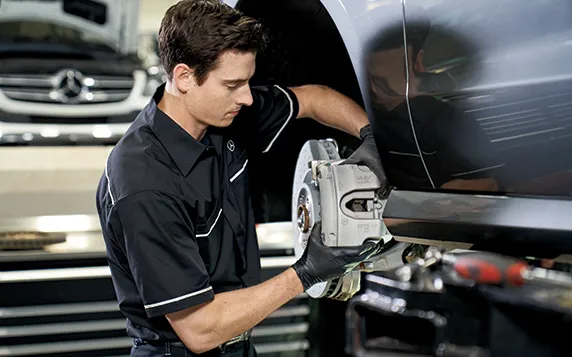

What is Service A?
With the first visit at approximately 10,000 miles or 1 years whichever comes first – and then approximately every
20,000 miles or 2 years after that - Service A includes:
- Mercedes-Benz motor oil replacement
- Oil filter replacement
- Fluid level checks and corrections
- Tire inflation check and correction
- Brake component inspection
- Reset maintenance counter
What is Service B?
With the first visit at approximately 20,000 miles or 1 year after the previous service - and then approximately every
20,000 miles or 2 years after that - Service B includes:
- Mercedes-Benz motor oil replacement
- Oil filter replacement
- Fluid level checks and corrections
- Tire inflation check and correction
- Cabin dust/combination filter replacement
- Brake component inspection
- Brake fluid exchange
- Reset maintenance counter
